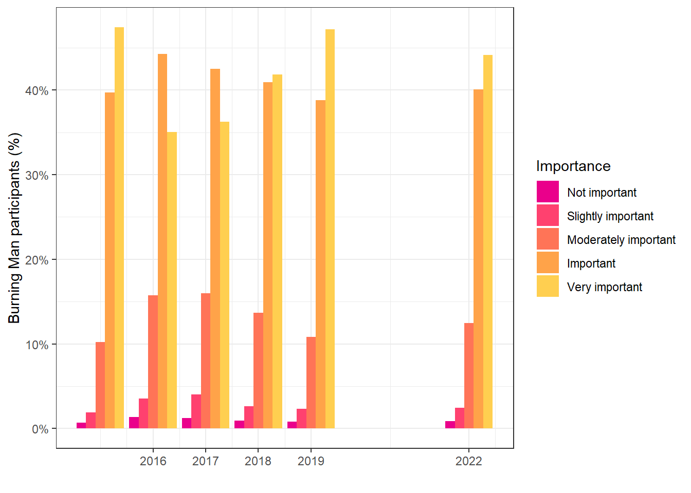
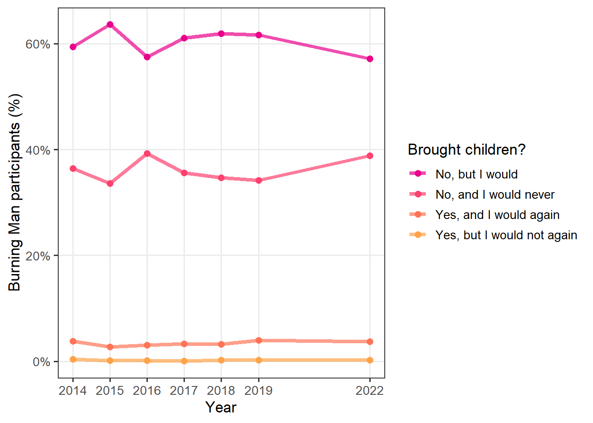
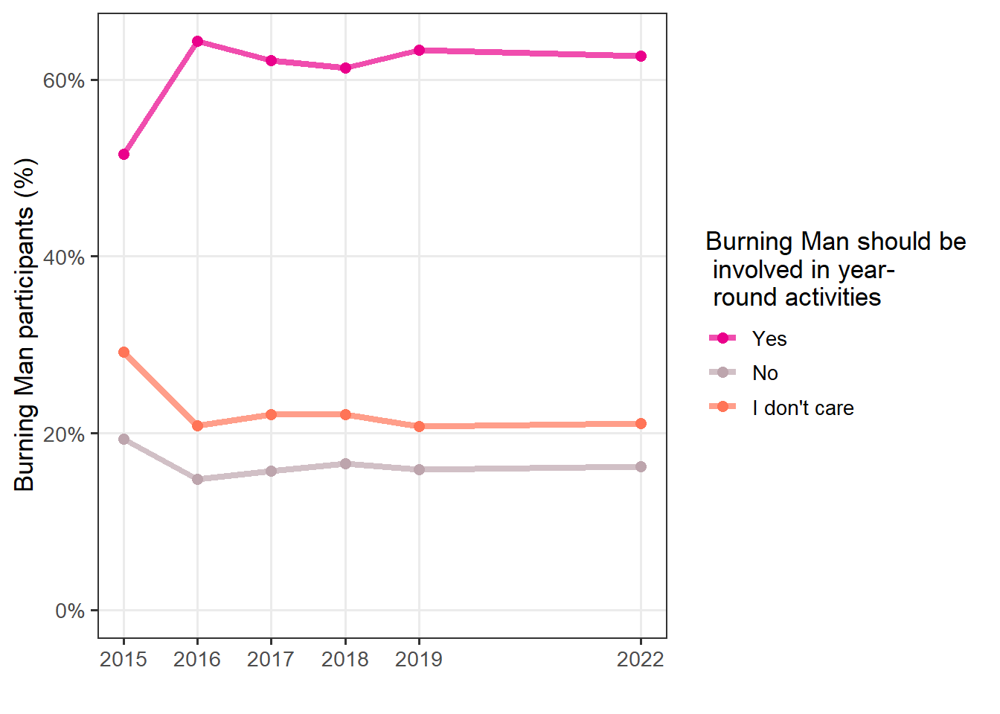
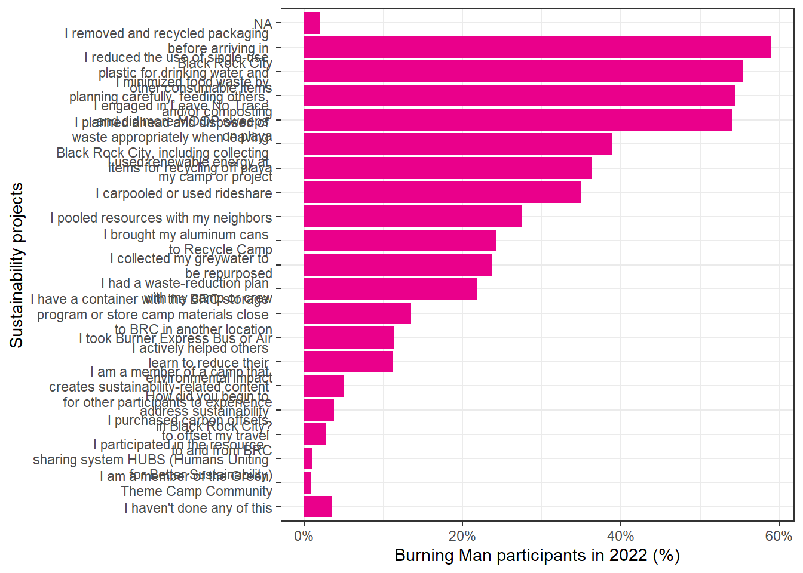
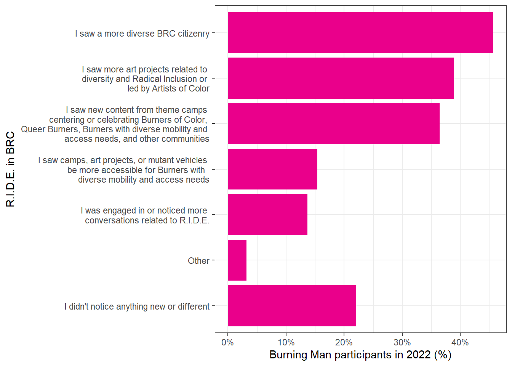
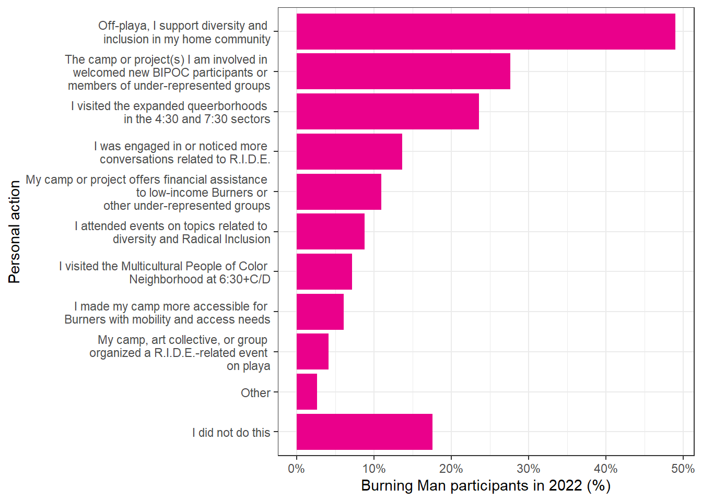

Chapter 4 Perspectives on Burning Man
4.1 Burner Identity and the 10 Principles
4.1.1 Do you identify as a Burner?

| 2016 | 2017 | 2018 | 2019 | 2022 | |
|---|---|---|---|---|---|
| No | 4.1% (3.5%, 4.7%) | 3.8% (3.3%, 4.3%) | 3.8% (3.4%, 4.3%) | 3.7% (3.3%, 4.2%) | 3.6% (3.1%, 4.0%) |
| Sort of | 23.4% (22.3%, 24.6%) | 22.6% (21.6%, 23.7%) | 21.4% (20.5%, 22.4%) | 19.3% (18.3%, 20.2%) | 18.5% (17.6%, 19.5%) |
| Yes | 72.5% (71.2%, 73.7%) | 73.6% (72.5%, 74.7%) | 74.7% (73.7%, 75.8%) | 77.0% (76.0%, 78.0%) | 77.9% (76.9%, 78.9%) |
4.1.2 Which of the 10 Principles do you practice most frequently in your everyday life?

| 2016 | 2017 | 2018 | 2019 | 2022 | |
|---|---|---|---|---|---|
| Decommodification | 47.0% (45.6%, 48.3%) | 40.4% (39.3%, 41.5%) | 55.0% (53.8%, 56.1%) | 56.4% (55.2%, 57.5%) | 58.7% (57.5%, 59.9%) |
| Immediacy | 26.6% (25.5%, 27.8%) | 22.9% (21.9%, 23.8%) | 28.6% (27.6%, 29.6%) | 30.7% (29.6%, 31.8%) | 30.7% (29.6%, 31.8%) |
| Radical Self-expression | 25.2% (24.1%, 26.4%) | 20.8% (19.9%, 21.8%) | 29.4% (28.3%, 30.4%) | 30.5% (29.5%, 31.6%) | 28.8% (27.7%, 29.9%) |
| Gifting | 14.6% (13.7%, 15.6%) | 11.3% (10.5%, 12.0%) | 16.1% (15.3%, 17.0%) | 17.0% (16.1%, 17.9%) | 17.0% (16.1%, 17.9%) |
| Leave No Trace | 15.6% (14.6%, 16.6%) | 12.1% (11.4%, 12.9%) | 16.4% (15.6%, 17.3%) | 18.4% (17.5%, 19.3%) | 16.0% (15.1%, 16.9%) |
| Radical Inclusion | 19.1% (18.1%, 20.2%) | 17.1% (16.3%, 18.0%) | 19.4% (18.5%, 20.3%) | 19.3% (18.3%, 20.2%) | 15.0% (14.2%, 15.9%) |
| Communal Effort | 12.7% (11.8%, 13.6%) | 10.7% (10.0%, 11.5%) | 12.6% (11.8%, 13.4%) | 12.8% (12.0%, 13.6%) | 14.5% (13.7%, 15.4%) |
| Civic Resposibility | 11.0% (10.2%, 11.9%) | 10.7% (10.1%, 11.4%) | 11.1% (10.4%, 11.9%) | 10.3% (9.6%, 11.0%) | 12.6% (11.8%, 13.5%) |
| Participation | 12.9% (12.0%, 13.8%) | 11.1% (10.4%, 11.9%) | 12.4% (11.7%, 13.2%) | 12.0% (11.2%, 12.8%) | 12.4% (11.6%, 13.3%) |
| Radical Self-reliance | 9.6% (8.8%, 10.5%) | 6.4% (5.9%, 7.0%) | 8.0% (7.4%, 8.7%) | 7.6% (7.0%, 8.3%) | 7.9% (7.3%, 8.6%) |
4.1.3 Which of the 10 Principles are the most difficult to practice in every day life?

| 2016 | 2017 | 2018 | 2019 | 2022 | |
|---|---|---|---|---|---|
| Decommodification | 47.0% (45.6%, 48.3%) | 40.4% (39.3%, 41.5%) | 55.0% (53.8%, 56.1%) | 56.4% (55.2%, 57.5%) | 58.7% (57.5%, 59.9%) |
| Immediacy | 26.6% (25.5%, 27.8%) | 22.9% (21.9%, 23.8%) | 28.6% (27.6%, 29.6%) | 30.7% (29.6%, 31.8%) | 30.7% (29.6%, 31.8%) |
| Radical Self-expression | 25.2% (24.1%, 26.4%) | 20.8% (19.9%, 21.8%) | 29.4% (28.3%, 30.4%) | 30.5% (29.5%, 31.6%) | 28.8% (27.7%, 29.9%) |
| Gifting | 14.6% (13.7%, 15.6%) | 11.3% (10.5%, 12.0%) | 16.1% (15.3%, 17.0%) | 17.0% (16.1%, 17.9%) | 17.0% (16.1%, 17.9%) |
| Leave No Trace | 15.6% (14.6%, 16.6%) | 12.1% (11.4%, 12.9%) | 16.4% (15.6%, 17.3%) | 18.4% (17.5%, 19.3%) | 16.0% (15.1%, 16.9%) |
| Radical Inclusion | 19.1% (18.1%, 20.2%) | 17.1% (16.3%, 18.0%) | 19.4% (18.5%, 20.3%) | 19.3% (18.3%, 20.2%) | 15.0% (14.2%, 15.9%) |
| Communal Effort | 12.7% (11.8%, 13.6%) | 10.7% (10.0%, 11.5%) | 12.6% (11.8%, 13.4%) | 12.8% (12.0%, 13.6%) | 14.5% (13.7%, 15.4%) |
| Civic Resposibility | 11.0% (10.2%, 11.9%) | 10.7% (10.1%, 11.4%) | 11.1% (10.4%, 11.9%) | 10.3% (9.6%, 11.0%) | 12.6% (11.8%, 13.5%) |
| Participation | 12.9% (12.0%, 13.8%) | 11.1% (10.4%, 11.9%) | 12.4% (11.7%, 13.2%) | 12.0% (11.2%, 12.8%) | 12.4% (11.6%, 13.3%) |
| Radical Self-reliance | 9.6% (8.8%, 10.5%) | 6.4% (5.9%, 7.0%) | 8.0% (7.4%, 8.7%) | 7.6% (7.0%, 8.3%) | 7.9% (7.3%, 8.6%) |
4.1.4 Importance of the 10 Principles
| 2015 | 2016 | 2017 | 2018 | 2019 | 2022 | |
|---|---|---|---|---|---|---|
| Not important | 0.7% (0.5%, 1.0%) | 1.4% (1.1%, 1.7%) | 1.2% (1.0%, 1.5%) | 0.9% (0.7%, 1.2%) | 0.8% (0.6%, 1.1%) | 0.9% (0.7%, 1.1%) |
| Slightly important | 1.9% (1.6%, 2.2%) | 3.6% (3.1%, 4.1%) | 4.0% (3.6%, 4.5%) | 2.6% (2.3%, 3.0%) | 2.4% (2.0%, 2.8%) | 2.5% (2.1%, 2.8%) |
| Moderately important | 10.2% (9.6%, 10.9%) | 15.7% (14.8%, 16.8%) | 16.0% (15.1%, 16.9%) | 13.7% (12.8%, 14.5%) | 10.8% (10.1%, 11.6%) | 12.5% (11.7%, 13.3%) |
| Important | 39.7% (38.6%, 40.8%) | 44.3% (42.9%, 45.6%) | 42.5% (41.3%, 43.7%) | 40.9% (39.8%, 42.1%) | 38.8% (37.7%, 40.0%) | 40.1% (38.9%, 41.3%) |
| Very important | 47.4% (46.3%, 48.5%) | 35.1% (33.8%, 36.4%) | 36.3% (35.1%, 37.4%) | 41.9% (40.7%, 43.0%) | 47.2% (46.0%, 48.4%) | 44.1% (42.9%, 45.3%) |
4.1.5 10 Principles essential to creating an authentic Burning Man experience

| 2015 | 2016 | 2017 | 2018 | 2019 | 2022 | |
|---|---|---|---|---|---|---|
| Not essential | 0.5% (0.3%, 0.7%) | 0.7% (0.5%, 1.0%) | 0.5% (0.3%, 0.6%) | 0.5% (0.4%, 0.7%) | 0.5% (0.4%, 0.8%) | 0.6% (0.4%, 0.8%) |
| Slightly essential | 1.1% (0.9%, 1.3%) | 1.1% (0.9%, 1.5%) | 1.2% (1.0%, 1.4%) | 0.8% (0.6%, 1.0%) | 0.8% (0.7%, 1.1%) | 0.8% (0.7%, 1.1%) |
| Moderately essential | 4.7% (4.3%, 5.2%) | 4.0% (3.5%, 4.5%) | 4.0% (3.6%, 4.5%) | 3.5% (3.1%, 4.0%) | 3.3% (2.9%, 3.7%) | 3.4% (3.0%, 3.8%) |
| Essential | 23.9% (22.9%, 24.8%) | 20.7% (19.6%, 21.8%) | 21.0% (20.0%, 22.0%) | 17.4% (16.5%, 18.2%) | 16.2% (15.3%, 17.1%) | 18.9% (18.0%, 19.8%) |
| Very essential | 69.8% (68.8%, 70.8%) | 73.5% (72.3%, 74.7%) | 73.4% (72.3%, 74.4%) | 77.9% (76.9%, 78.8%) | 79.2% (78.2%, 80.1%) | 76.3% (75.3%, 77.3%) |
4.1.6 Incorporation of the 10 Principles in the workplace

| 2016 | 2017 | 2018 | 2019 | 2022 | |
|---|---|---|---|---|---|
| I have modeled my professional activities on them | 6.4% (5.7%, 7.0%) | 64.1% (62.9%, 65.3%) | 26.2% (25.1%, 27.3%) | 17.2% (16.4%, 18.1%) | 28.6% (27.5%, 29.7%) |
| No, I am not | 29.4% (28.2%, 30.7%) | 8.3% (7.7%, 9.0%) | 64.8% (63.6%, 65.9%) | 6.4% (5.7%, 7.0%) | 64.1% (62.9%, 65.3%) |
| NA | 64.2% (62.9%, 65.5%) | 28.3% (27.2%, 29.4%) | 9.6% (8.9%, 10.3%) | 29.4% (28.2%, 30.7%) | 8.3% (7.7%, 9.0%) |
| I try to practice them at my workplace | 7.3% (6.7%, 7.9%) | 63.3% (62.2%, 64.5%) | 53.2% (51.9%, 54.4%) | 64.2% (62.9%, 65.5%) | 28.3% (27.2%, 29.4%) |
| Not applicable | 28.6% (27.5%, 29.7%) | 9.1% (8.4%, 9.8%) | 20.0% (19.1%, 21.0%) | 7.3% (6.7%, 7.9%) | 63.3% (62.2%, 64.5%) |
4.2 Children at Burning Man
4.2.1 Have you ever brought children under 18 to Black Rock City?
| 2014 | 2015 | 2016 | 2017 | 2018 | 2019 | 2022 | |
|---|---|---|---|---|---|---|---|
| No, but I would | 59.4% (58.4%, 60.3%) | 63.6% (62.5%, 64.7%) | 57.5% (56.1%, 58.8%) | 61.0% (59.8%, 62.2%) | 61.9% (60.7%, 63.1%) | 61.6% (60.4%, 62.9%) | 57.2% (56.0%, 58.4%) |
| No, and I would never | 36.4% (35.5%, 37.4%) | 33.6% (32.5%, 34.7%) | 39.3% (37.9%, 40.6%) | 35.6% (34.4%, 36.8%) | 34.7% (33.5%, 35.9%) | 34.2% (33.0%, 35.4%) | 38.9% (37.7%, 40.0%) |
| Yes, and I would again | 3.9% (3.5%, 4.3%) | 2.7% (2.3%, 3.1%) | 3.1% (2.7%, 3.6%) | 3.3% (2.9%, 3.7%) | 3.2% (2.8%, 3.6%) | 4.0% (3.5%, 4.5%) | 3.7% (3.4%, 4.2%) |
| Yes, but I would not again | 0.4% (0.3%, 0.5%) | 0.1% (0.1%, 0.2%) | 0.1% (0.1%, 0.4%) | < 0.1% (–, –) | 0.2% (0.1%, 0.4%) | 0.2% (0.1%, 0.3%) | 0.2% (0.1%, 0.3%) |
4.2.2 Do you think that Burning Man event attendance should be restricted to participants aged 18 or older?

| 2016 | 2017 | 2018 | 2019 | 2022 | |
|---|---|---|---|---|---|
| No, all ages | 63.4% (62.1%, 64.8%) | 68.7% (67.5%, 69.8%) | 70.1% (69.0%, 71.2%) | 70.8% (69.6%, 71.9%) | 67.1% (65.9%, 68.2%) |
| Yes, only 18+ | 17.7% (16.6%, 18.7%) | 13.7% (12.9%, 14.6%) | 12.2% (11.5%, 13.1%) | 12.7% (11.8%, 13.5%) | 14.0% (13.2%, 14.9%) |
| No opinion | 18.9% (17.8%, 20.0%) | 17.6% (16.7%, 18.6%) | 17.6% (16.7%, 18.6%) | 16.6% (15.6%, 17.5%) | 18.9% (18.0%, 19.9%) |
4.3 Burning Man Project’s Nonprofit Activites
4.3.1 Familiarity with programs and affiliates of the nonprofit Burning Man Project

| 2015 | 2016 | 2017 | 2018 | 2019 | 2022 | |
|---|---|---|---|---|---|---|
| Black Rock Labs (formerly Black Rock Solar) - Heard of it | 26.3% (25.3%, 27.3%) | 24.5% (23.4%, 25.7%) | 21.9% (21.0%, 22.9%) | 23.8% (22.9%, 24.8%) | 25.2% (24.1%, 26.2%) | 27.1% (26.0%, 28.2%) |
| Black Rock Labs (formerly Black Rock Solar) - No | 38.5% (37.4%, 39.6%) | 47.6% (46.2%, 48.9%) | 51.8% (50.6%, 52.9%) | 56.9% (55.7%, 58.0%) | 52.2% (51.0%, 53.4%) | 53.6% (52.4%, 54.8%) |
| Black Rock Labs (formerly Black Rock Solar) - Yes | 35.3% (34.2%, 36.4%) | 28.0% (26.8%, 29.1%) | 26.3% (25.4%, 27.3%) | 19.3% (18.4%, 20.2%) | 22.7% (21.7%, 23.6%) | 19.3% (18.5%, 20.2%) |
| Burners Without Borders - Heard of it | 37.9% (36.8%, 39.0%) | 39.2% (37.9%, 40.5%) | 33.1% (32.1%, 34.2%) | 36.1% (34.9%, 37.2%) | 32.8% (31.7%, 33.9%) | 36.8% (35.6%, 37.9%) |
| Burners Without Borders - No | 13.0% (12.3%, 13.8%) | 14.7% (13.7%, 15.8%) | 13.1% (12.3%, 14.0%) | 11.5% (10.7%, 12.3%) | 11.5% (10.8%, 12.3%) | 10.5% (9.8%, 11.4%) |
| Burners Without Borders - Yes | 49.1% (48.0%, 50.2%) | 46.1% (44.8%, 47.4%) | 53.7% (52.6%, 54.8%) | 52.4% (51.3%, 53.6%) | 55.7% (54.5%, 56.8%) | 52.7% (51.5%, 53.9%) |
| Burning Man Arts - Heard of it | 34.0% (32.9%, 35.1%) | 33.4% (32.1%, 34.7%) | 32.0% (31.0%, 33.1%) | 33.9% (32.8%, 35.0%) | 31.9% (30.8%, 33.0%) | 34.1% (33.0%, 35.3%) |
| Burning Man Arts - No | 25.1% (24.1%, 26.1%) | 29.8% (28.5%, 31.1%) | 29.6% (28.6%, 30.7%) | 24.8% (23.8%, 25.8%) | 24.6% (23.6%, 25.6%) | 26.8% (25.7%, 27.9%) |
| Burning Man Arts - Yes | 40.9% (39.8%, 42.1%) | 36.8% (35.6%, 38.1%) | 38.3% (37.3%, 39.4%) | 41.3% (40.2%, 42.5%) | 43.5% (42.3%, 44.7%) | 39.1% (37.9%, 40.2%) |
| Burning Man Regional Network - Heard of it | 35.3% (34.2%, 36.4%) | 37.1% (35.7%, 38.4%) | 34.9% (33.8%, 36.0%) | 35.4% (34.3%, 36.5%) | 33.3% (32.2%, 34.4%) | 36.1% (34.9%, 37.3%) |
| Burning Man Regional Network - No | 22.2% (21.3%, 23.2%) | 25.3% (24.0%, 26.5%) | 28.1% (27.1%, 29.2%) | 28.2% (27.1%, 29.3%) | 26.0% (25.0%, 27.1%) | 26.0% (24.9%, 27.2%) |
| Burning Man Regional Network - Yes | 42.5% (41.4%, 43.6%) | 37.7% (36.4%, 39.0%) | 37.0% (35.9%, 38.0%) | 36.4% (35.3%, 37.5%) | 40.7% (39.5%, 41.8%) | 37.8% (36.7%, 39.0%) |
| Fly Ranch Project - Heard of it | – | – | – | 27.4% (26.4%, 28.4%) | 27.3% (26.3%, 28.4%) | 30.6% (29.5%, 31.8%) |
| Fly Ranch Project - No | – | – | – | 41.2% (40.0%, 42.3%) | 36.4% (35.2%, 37.5%) | 31.8% (30.6%, 33.0%) |
| Fly Ranch Project - Yes | – | – | – | 31.5% (30.4%, 32.5%) | 36.3% (35.2%, 37.5%) | 37.6% (36.5%, 38.8%) |
| Philosophical Center - Heard of it | – | – | – | – | – | 13.9% (13.1%, 14.7%) |
| Philosophical Center - No | – | – | – | – | – | 80.1% (79.2%, 81.1%) |
| Philosophical Center - Yes | – | – | – | – | – | 6.0% (5.5%, 6.5%) |
4.3.2 Should the Burning Man Project be involved in faciliating and producing year-round activites?
| 2015 | 2016 | 2017 | 2018 | 2019 | 2022 | |
|---|---|---|---|---|---|---|
| Yes | 51.5% (50.4%, 52.7%) | 64.3% (63.0%, 65.6%) | 62.2% (61.0%, 63.4%) | 61.3% (60.1%, 62.4%) | 63.3% (62.1%, 64.5%) | 62.7% (61.5%, 63.9%) |
| No | 19.3% (18.4%, 20.2%) | 14.8% (13.8%, 15.8%) | 15.7% (14.8%, 16.7%) | 16.6% (15.7%, 17.5%) | 15.9% (15.0%, 16.8%) | 16.2% (15.3%, 17.2%) |
| I don’t care | 29.2% (28.2%, 30.2%) | 20.9% (19.8%, 22.0%) | 22.1% (21.1%, 23.1%) | 22.1% (21.1%, 23.2%) | 20.8% (19.8%, 21.8%) | 21.1% (20.1%, 22.1%) |
4.3.3 How would you distribute $1,000 to donate to programs of the nonprofit Burning Man Project?

| 2015 | 2016 | 2017 | 2018 | 2019 | 2022 | |
|---|---|---|---|---|---|---|
| BRC art | $20 ($20, $21) | $13 ($12, $13) | $8 ($7, $8) | $164 ($159, $170) | $128 ($123, $133) | $16 ($15, $16) |
| Sustainability efforts | $9 ($9, $10) | $17 ($16, $18) | $3 ($2, $3) | $67 ($63, $71) | $121 ($117, $126) | $13 ($12, $13) |
| BRC planning and infrastructure | $16 ($15, $16) | $15 ($14, $15) | $16 ($15, $16) | $153 ($147, $158) | $91 ($86, $95) | $18 ($17, $18) |
| Low income ticket program | $13 ($12, $13) | $9 ($8, $9) | $6 ($6, $7) | $142 ($137, $147) | $85 ($81, $89) | $15 ($15, $16) |
| Disaster relief and community building | $18 ($17, $18) | $3 ($3, $4) | $15 ($14, $15) | $167 ($161, $173) | $74 ($71, $78) | $7 ($6, $7) |
| Public art in the US | $15 ($15, $16) | $17 ($17, $18) | $14 ($13, $14) | $127 ($123, $132) | $61 ($58, $65) | $2 ($2, $2) |
| Public art abroad | $7 ($6, $7) | $10 ($10, $11) | $17 ($16, $17) | $62 ($58, $65) | $60 ($57, $63) | $16 ($16, $17) |
| Other | $2 ($2, $2) | $17 ($17, $18) | $13 ($13, $14) | $78 ($75, $82) | $41 ($39, $44) | $12 ($12, $13) |
| BRC multimedia | $16 ($16, $17) | $14 ($14, $15) | $6 ($6, $6) | $34 ($31, $38) | $57 ($53, $62) | $15 ($14, $16) |
| R.I.D.E. efforts | $12 ($12, $13) | $17 ($17, $18) | $8 ($8, $8) | $150 ($145, $155) | $20 ($20, $21) | $13 ($12, $13) |
| Regional network | $15 ($14, $16) | $13 ($12, $13) | $2 ($1, $2) | $130 ($126, $135) | $9 ($9, $10) | $17 ($16, $18) |
4.4 Sustainability
4.4.1 What new sustainability projects did you notice while in BRC in 2022?

| 2022 | |
|---|---|
| More solar power and battery technologies at camps | 40.9% (39.7%, 42.1%) |
| The solar-powered Man | 28.5% (27.4%, 29.5%) |
| Camps reducing their environmental impact | 22.2% (21.3%, 23.3%) |
| More art projects with ecological or sustainability-related conceptual themes | 21.3% (20.3%, 22.3%) |
| Honoraria and other art projects reducing their environmental impact | 15.8% (15.0%, 16.7%) |
| Fewer gas and diesel generators around the city | 14.4% (13.6%, 15.3%) |
| I heard or was engaged in more conversations around environmental sustainability than previous years | 13.5% (12.7%, 14.3%) |
| Solar-powered trailers in staff locations | 11.5% (10.8%, 12.2%) |
| More MOOP sweeps | 10.4% (9.7%, 11.2%) |
| More educational programming from camps or projects about sustainability | 9.3% (8.6%, 10.0%) |
| More electric mutant vehicles | 8.3% (7.6%, 9.0%) |
| Other | 3.3% (2.9%, 3.7%) |
| I didn’t notice anything new | 22.3% (21.4%, 23.4%) |
4.4.2 How did you (and your camp or project) begin to address sustainability in Black Rock City?
| 2022 | |
|---|---|
| I collected my greywater to be repurposed | 23.7% (22.7%, 24.7%) |
| I had a waste-reduction plan with my camp or crew | 21.9% (21.0%, 22.9%) |
| I have a container with the BRC storage program or store camp materials close to BRC in another location | 13.5% (12.7%, 14.3%) |
| I took Burner Express Bus or Air | 11.4% (10.7%, 12.2%) |
| I actively helped others learn to reduce their environmental impact | 11.3% (10.5%, 12.0%) |
| I am a member of a camp that creates sustainability-related content for other participants to experience | 5.0% (4.5%, 5.5%) |
| How did you begin to address sustainability in Black Rock City? | 3.8% (3.4%, 4.2%) |
| I purchased carbon offsets to offset my travel to and from BRC | 2.8% (2.4%, 3.2%) |
| I participated in the resource- sharing system HUBS (Humans Uniting for Better Sustainability) | 1.0% (0.8%, 1.3%) |
| I am a member of the Green Theme Camp Community | 0.9% (0.7%, 1.2%) |
| I haven’t done any of this | 3.5% (3.0%, 4.0%) |

4.5 Radical Inclusion, Diversity, and Equity (R.I.D.E.)
4.5.1 How did you see R.I.D.E. in action while in BRC?
| 2022 | |
|---|---|
| I saw a more diverse BRC citizenry | 45.6% (44.4%, 46.8%) |
| I saw more art projects related to diversity and Radical Inclusion or led by Artists of Color | 38.9% (37.8%, 40.1%) |
| I saw new content from theme camps centering or celebrating Burners of Color, Queer Burners, Burners with diverse mobility and access needs, and other communities | 36.4% (35.3%, 37.6%) |
|
I saw camps, art projects, or mutant vehicles
be more accessible for Burners with diverse mobility and access needs |
15.4% (14.5%, 16.2%) |
| I was engaged in or noticed more conversations related to R.I.D.E. | 13.7% (12.9%, 14.5%) |
| Other | 3.2% (2.8%, 3.6%) |
| I didn’t notice anything new or different | 22.1% (21.1%, 23.1%) |
4.5.2 How did you personally work to create a more diverse and welcoming Black Rock City?
| 2022 | |
|---|---|
| Off-playa, I support diversity and inclusion in my home community | 48.9% (47.7%, 50.2%) |
| The camp or project(s) I am involved in welcomed new BIPOC participants or members of under-represented groups | 27.7% (26.6%, 28.7%) |
| I visited the expanded queerborhoods in the 4:30 and 7:30 sectors | 23.6% (22.6%, 24.6%) |
| I was engaged in or noticed more conversations related to R.I.D.E. | 13.6% (12.9%, 14.4%) |
| My camp or project offers financial assistance to low-income Burners or other under-represented groups | 10.9% (10.2%, 11.7%) |
| I attended events on topics related to diversity and Radical Inclusion | 8.8% (8.2%, 9.5%) |
| I visited the Multicultural People of Color Neighborhood at 6:30+C/D | 7.2% (6.6%, 7.8%) |
| I made my camp more accessible for Burners with mobility and access needs | 6.1% (5.6%, 6.7%) |
| My camp, art collective, or group organized a R.I.D.E.-related event on playa | 4.1% (3.7%, 4.6%) |
| Other | 2.6% (2.3%, 3.1%) |
| I did not do this | 17.5% (16.6%, 18.5%) |